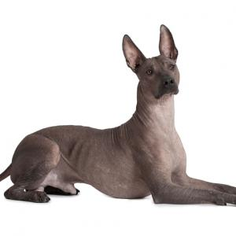

Xoloitzcuintle

Milenario y peculiar es el perro xoloitzcuintle, conocido también
como perro azteca mexicano o xolo. Es originario de México, lugar
donde es muy apreciado y se le considera una joya arqueológica viviente,
ya que esta raza canina era ya compañera de los aztecas hace más de 7000 años.
Su apariencia es singular, puesto que carece de pelo, y por ello también se
le conoce como perro sin pelo mexicano.
| Origen: |
America-México |
| Altura: |
35-45cm |
| Peso: |
3-10kg |
Ver